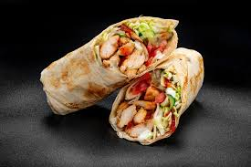

Chicken Shewarma

Description
Shawarma is a popular Middle Eastern street food made with marinated meat (usually chicken, beef, or lamb) that is slow-cooked on a vertical rotisserie.
The meat is thinly sliced and served in a warm pita or flatbread, along with fresh vegetables, pickles, and a creamy garlic sauce or tahini.
This recipe simplifies the process by using a stovetop or grill to cook the marinated meat, making it easy to recreate this flavorful dish at home.
Ingredients
- 500g chicken thighs (or beef/lamb, thinly sliced)
- 4 pita breads or flatbreads
- 1 cup shredded lettuce
- 1 cup diced tomatoes
- 1/2 cup sliced cucumbers
- 1/4 cup pickles (optional)
- 1/4 cup tahini sauce or garlic sauce
- 2 tablespoons olive oil
- 1 teaspoon paprika
- 1 teaspoon cumin
- 1 teaspoon coriander
- 1/2 teaspoon turmeric
- 1/2 teaspoon cinnamon
- 3 cloves garlic (minced)
- 2 tablespoons lemon juice
- Salt and pepper (to taste)
Steps
- In a large bowl, combine the olive oil, paprika, cumin, coriander, turmeric, cinnamon, minced garlic, lemon juice, salt, and pepper. Mix well to create the marinade.
- Add the thinly sliced chicken (or beef/lamb) to the marinade, ensuring it is fully coated. Cover and refrigerate for at least 1 hour (or overnight for best results).
- Heat a skillet or grill pan over medium-high heat. Add the marinated meat and cook for 5-7 minutes, stirring occasionally, until fully cooked and slightly charred.
- Warm the pita bread or flatbreads in a skillet or microwave for a few seconds to make them pliable.
- Assemble the shawarma by placing a generous amount of cooked meat in the center of each pita bread.
- Top with shredded lettuce, diced tomatoes, sliced cucumbers, and pickles (if using).
- Drizzle with tahini sauce or garlic sauce.
- Fold the pita bread around the filling, wrapping it tightly to hold everything together.
- Serve immediately and enjoy your homemade shawarma!
Home Page